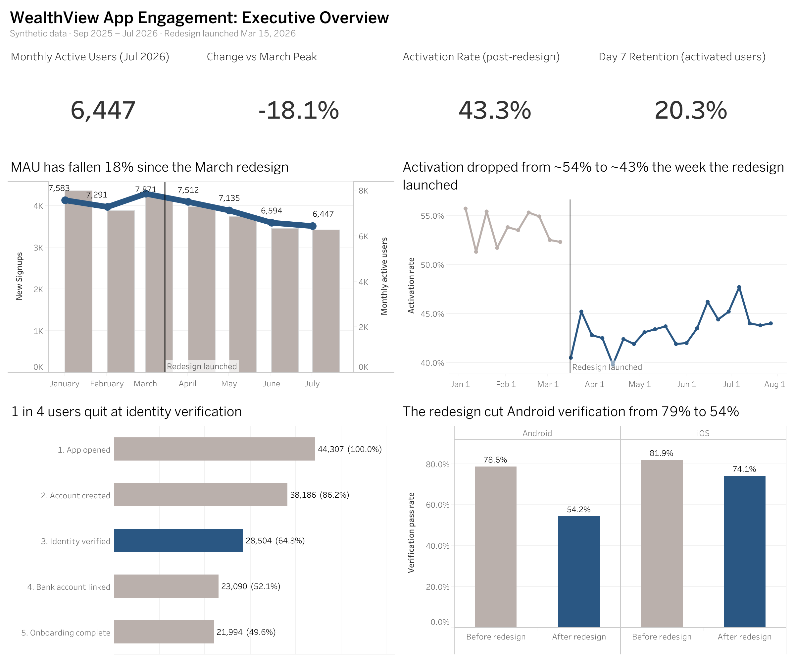
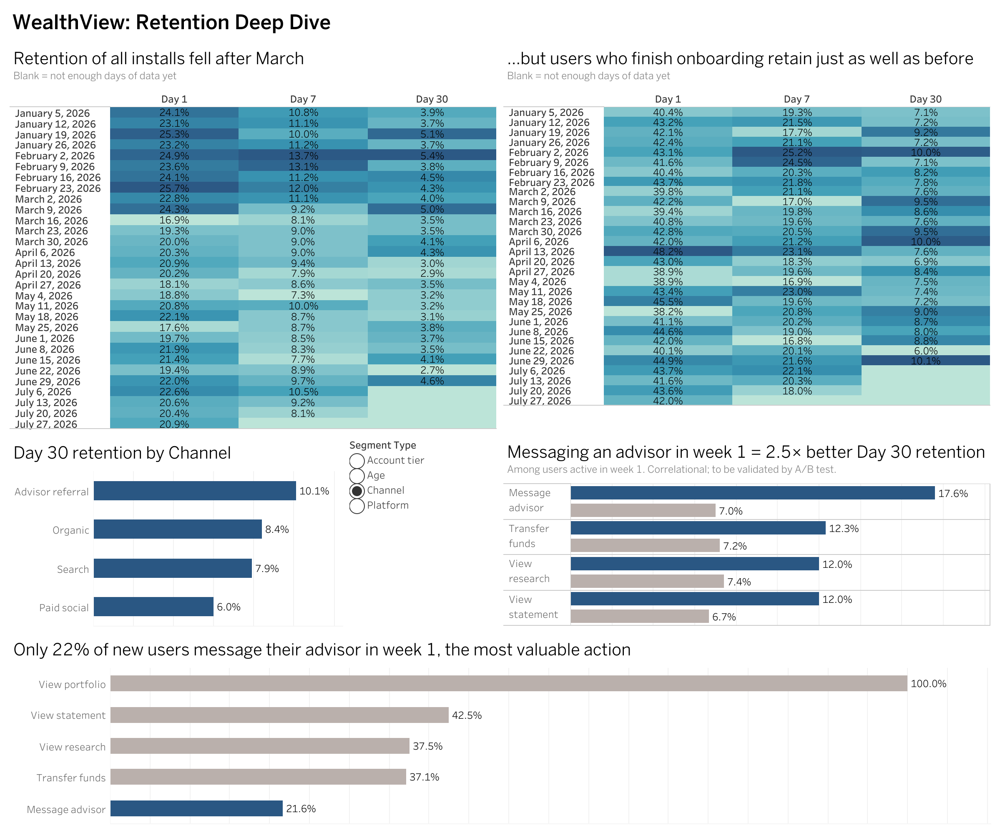

WealthView · App retention analysis
Fixing Android identity verification can recover WealthView’s lost growth
MAU fell 18% after the March onboarding redesign. The cause is a broken verification step, not the app itself.
Sumayyah Syed · October 2026 · Synthetic data, Sep 2025 – Jul 2026
Monthly active users are down 18% since the March redesign
March 2026 (peak)
7,871
July 2026
6,447
−18.1% in four months
7,583
Jan
7,291
Feb
7,871
Mar
7,512
Apr
7,135
May
6,594
Jun
6,447
Jul
Monthly active users, 2026. Gray = before the Mar 15 redesign, blue = after. Source: sql/07_active_users_trend.sql · 2
Identity verification is the biggest leak in onboarding
1. App opened
44,307
2. Account created
38,186
3. Identity verified
28,504
4. Bank linked
23,090
5. Onboarding done
21,994
9,682
users quit at verification: 1 in 4 of everyone who created an account
All users, Sep 2025 – Jul 2026. Source: sql/03_onboarding_funnel.sql · 3
The redesign cut Android verification from 79% to 54%
78.6%
54.2%
Before
After
Android −24 pts
81.9%
74.1%
Before
After
iOS −8 pts
Activation fell from 54% to 43% the week the redesign launched on March 15.
The drop is three times larger on Android, pointing to a platform-specific problem in the new verification flow.
Verification pass rate among users who created an account. Before = signups before Mar 15, 2026. Source: sql/04 · 4
Users who get in stay just as long as before
Getting in
Activation rate (finished onboarding)
54% → 43%
Down 10 points after the redesign
Staying
Day 30 retention of activated users
8.1% → 8.2%
No change after the redesign
The app still keeps the people it gets. The problem is the front door, not the product.
Weekly signup cohorts, Jan – Jul 2026 (D30 only where 30 days of data exist). Source: sql/05_retention_cohorts.sql · 5
Messaging an advisor in week 1 goes with 2.5× better retention
Day 30 retention, among users active in week 1
Messaged advisor
17.6%
Did not
7.0%
Other features: users who used them retain 1.6–1.8× better
22%
of new users message their advisor in week 1, the least-used feature with the strongest link to retention
Correlation, not proof: committed clients may simply message more. Next step is an A/B test of a week-1 advisor nudge.
Activated users with 30+ days of data who returned in days 1–7. Source: sql/08, sql/09 · 6
Fixing verification ranks first by a wide margin
| # | Improvement | Reach | Impact | Confid. | Effort | RICE |
|---|---|---|---|---|---|---|
| 1 | Simplify identity verification (Android first) | 9,000 | 3 | 80% | 6 | 3,600 |
| 2 | “Finish verifying” reminder | 3,100 | 1 | 60% | 1 | 1,860 |
| 3 | Week-1 advisor messaging nudge | 4,500 | 2 | 50% | 3 | 1,500 |
| 4 | Shift spend from paid social to referrals | 2,600 | 1 | 70% | 2 | 910 |
| 5 | “Link a bank account later” option | 5,900 | 1 | 50% | 4 | 738 |
| 6 | Personalized insights feed | 4,500 | 0.5 | 30% | 5 | 135 |
RICE = Reach × Impact × Confidence ÷ Effort. Reach = users per quarter (from the data); effort in person-weeks (estimated). The reminder ranks high only because it’s cheap, and its reach shrinks once #1 ships.
Full scoring rationale: docs/rice_prioritization.md · 7
A simpler verification flow lifted Android completion 8 points
Onboarding completion, all
+4.0 pts
43.5% → 47.5% · p = 0.026
Onboarding completion, Android
+8.1 pts
37.0% → 45.1% · p = 0.002
Support tickets (guardrail)
−32%
6.0% → 4.1% · improved
Fraud flags (guardrail)
Watch
0.15% → 0.79% · p = 0.08
The test
4 screens → 2, auto-capture of ID, clearer errors. Same KYC checks. 50/50 split of new users, 1,546 per group, 4 full weeks.
The caveat
The fraud rise isn’t significant, but it rests on about 1 vs 6 flagged users. Too few to call it safe, so roll out in stages.
Simulated experiment results. Plan and full results: docs/ab_test_proposal.md · 8
Recommendation: ship the new flow in stages, then test the advisor nudge
Weeks 1–2
Roll out to all Android, half of iOS
Biggest gain where the redesign hurt most.
Ongoing
Monitor fraud weekly with risk
Alert if flags pass 0.5% of completed onboardings.
Week 3+
Full rollout, then the next test
A/B test the week-1 advisor nudge to see if the link is causal.
~420
more activated users per quarter from a 4-point lift, recovering about 40% of what the redesign lost. Verification still has room to improve.
Based on ~10,500 new installs per quarter · 9
Appendix: the dashboards that track these KPIs

Executive Overview

Retention Deep Dive
Interactive version: public.tableau.com/views/WealthViewAppRetention · SQL and code: github.com/sumayyahsyed/app-retention-analysis · 10